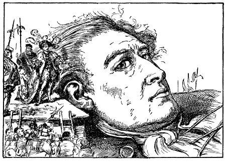
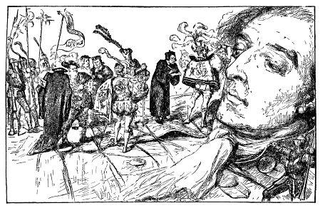

Đứng trên bục, một người có vẻ quyền cao chức trọng đang đọc một bài diễn văn dài cho tôi nghe, nhưng tôi chẳng hiểu được đến một chữ. Nhưng trước tiên, cần biết rằng trước khi đọc bản hiệu triệu, nhân vật này đã kêu lên ba lần: lang ro dehul san (những tiếng này, cũng như những tiếng tôi đã kể bên trên, sẽ được nhắc lại và sẽ được giải thích ở bên dưới). Sau bài diễn văn, chừng năm chục người đến cắt những sợi dây buộc phía đầu bên trái tôi, thế là tôi tha hồ ngoảnh sang bên phải để quan sát dáng điệu của người vừa đọc diễn văn. Có lẽ anh ta trạc tuổi trung niên và trông có vẻ bệ vệ hơn ba anh kia. Một anh là người hầu, bởi vì tôi thấy anh này nâng vạt áo sau của anh trước và chỉ nhỉnh hơn ngón tay giữa của tôi một chút. Hai người khác thì kẻ đứng bên phải, người đứng bên trái để giúp anh ta. Quả anh ta là một nhà hùng biện có tài, tôi có thể nhận thấy nhiều đoạn đe dọa và nhiều đoạn hứa hẹn, rộng lượng và khoan dung. Tôi đáp lại vài ba lời bằng một giọng quy phục, tay trái giơ lên và mắt ngước nhìn mặt trời như thể muốn là trời làm chứng giám. Tôi đói gần chết, bởi vì trước khi dời con tàu, từ lâu tôi không được ăn uống gì. Thôi thì mặc những phép tắc của lối xã giao tối thiểu, bởi vì dạ dày tôi lúc đó đang gào thét, tôi nóng lòng nóng ruột đưa ngay mấy ngón tay vào mồm, ra ý đòi ăn. Viên quan hurgo (tiếng gọi viên quan đại thần, theo như tôi hiểu từ ấy) hiểu ngay. Ông ta xuống đất và ra lệnh cho bắc nhiều thang bên sườn tôi. Trên một trăm người leo lên thang, tiến về phía miệng tôi, họ vác những thúng thịt đầy ăm ắp. Những thức ăn đó đã được chuẩn bị và cung cấp theo lệnh của nhà vua, ngay từ khi vua được tin tôi đến xứ sở của ngài. Tôi nhận ra các loại thịt của một thú vật, nhưng không phân biệt được đích xác thịt gì. Có thịt vai, có chân giò, lườn, thái từng miếng như thịt cừu, làm rất khéo nhưng nhỏ hơn cánh chim cắt. Tôi nhai hai ba miếng một lần và chén một miếng ba khoanh bánh to bằng viên đạn súng hỏa mai. Những người tí hon ra sức xúc rất nhanh cho tôi, ai nấy đều tỏ vẻ hết sức thán phục và ngạc nhiên trước cái thân hình khổng lồ và sức ăn ghê gớm của tôi. Sau đó tôi ra hiệu muốn uống nước. Thấy tôi ăn nhiều như thế, những người tí hon đoán chắc tôi uống không ít. Rất khéo léo và tài tình, họ đưa được lên bàn tay tôi cái thùng ton-nô to nhất rồi tháo nắp ra. Tôi uống một hơi cạn thùng, cái đó chẳng có gì lạ, bởi vì nó chỉ bằng một chén nước, vị gần giống như rượu vang Burgundy hảo hạng và ra hiệu còn muốn uống nữa, nhưng không còn thùng nào. Sau khi thấy tôi lập những chiến công lừng lẫy như vậy, họ hò reo vui vẻ và vừa nhảy múa trên ngực tôi vừa nhắc lại nhiều lần mấy tiếng lúc trước: hekinah degul. Họ ra hiệu cho tôi ném hai cái thùng xuống. Họ hét lên mấy tiếng: borach mevolah để bảo mọi người tránh ra xa. Khi thấy mấy cái thùng tung lên trời, họ đồng thanh reo lên: hekinah degul. Thú thật là khi họ đi đi lại lại trên người tôi, lắm lúc tôi muốn túm lấy bốn, năm chục chú, vứt xuống đất. Nhưng nhớ lại sự đau đớn, và chắc đó chưa phải là những đòn đau nhất họ có thể dành cho tôi, và nhớ lại lời hứa danh dự khi tôi có vẻ quy phục, tôi vội vàng bỏ cái ý định điên rồ ấy đi. Thêm nữa, bây giờ tôi tự coi như đã bị ràng buộc vào những quy tắc của một người khách đối với một dân tộc đã đón tiếp tôi một cách khoan dung và trang trọng như vậy. Và, càng suy nghĩ, tôi càng khâm phục lòng can đảm của những chú bé tí hon đã có gan trèo lên mình tôi, đi đi lại lại trong khi một tay tôi không bị trói, và họ không hề run sợ khi trông thấy một sinh vật kỳ dị như tôi. Một lát sau, thấy tôi không đòi ăn nữa, một viên quan đại thần, nhân danh đức vua, ra trước mắt tôi. Ông ta trèo lên chân phải tôi, cùng mười hai người tùy tùng tiến lên mặt tôi.

Ông quan đại thần mở ra một giấy ủy nhiệm có áp triện rồng rồi đặt trước mặt tôi, ông ta nói một hồi đến mười phút, giọng không có gì giận dữ nhưng rất kiên quyết, nhiều lần giơ tay về một phía - sau này tôi mới hiểu là phía thủ đô, cách khoảng nửa dặm, nơi hoàng thượng cùng Hội đồng đã quyết nghị dời tôi về đấy. Tôi đáp lại vài ba tiếng, nhưng mất công toi. Tôi liền lấy tay trái làm hiệu tôi muốn được hoàn toàn tự do, bằng cách áp tay trái vào cánh tay phải - cố tránh giơ tay qua đầu viên quan, sợ đụng phải ông ta và đoàn tùy tùng. Hình như ông ta hiểu cả, bởi vì ông ta lắc đầu và lấy tay làm hiệu cho tôi biết rằng tôi sẽ bị khiêng đi như một người tù. Song, ông ta lại ra hiệu cho tôi biết, tôi sẽ được ăn uống đầy đủ và sẽ được đối đãi tốt. Thấy vậy, một lần nữa, tôi muốn dứt những dây trói. Nhưng nghĩ đến nhưng mũi tên cắm tua tủa trên mặt và tay, nay nhiều nốt đã sưng vù và còn nhiều mũi tên vẫn cắm chặt vào thịt, tôi đành quyết định phải quy phục không điều kiện. Thế là viên Hurgo và đoàn tùy tùng rút lui với những lễ nghi rất lịch sự. Một lát, tôi nghe thấy tiếng hò reo, mấy tiếng: peplom selan luôn luôn được nhắc lại. Tôi cảm thấy một đoàn người rất đông đang nới bớt dây trói cho tôi ở phía sườn bên trái. Thế là tôi có thể quay mình sang bên phải, cứ thế đái một bãi to tướng, nhẹ hẳn người. Những người xung quanh hết sức ngạc nhiên, họ thấy tôi cử động và đoán được tôi sẽ làm gì, nên tức khắc giạt ra hai bên để tránh con suối cứ tồ tồ và dữ dội phun ra từ người tôi. Trước đó, họ xoa lên mặt và tay tôi một thứ dầu thơm mát, làm cho chỉ vài phút sau những vết thương dịu hẳn đi. Đã dễ chịu như thế, lại thêm một bữa ăn uống no nê, nhiều chất bổ, nên tôi buồn ngủ díp mắt lại. Tôi đánh một giấc tám tiếng đồng hồ liền - sau này người ta bảo tôi như vậy. Cái đó chẳng có gì lạ, bởi vì, theo lệnh của nhà vua, thầy thuốc đã pha thuốc ngủ vào hai thùng rượu.
Hình như vừa thấy tôi nằm ngủ trên bờ biển, người ta báo tin ngay cho đức vua. Hội đồng họp và quyết nghị tôi sẽ bị trói như đã kể bên trên (tôi bị trói lúc ban đêm, khi tôi ngủ li bì), thức ăn và đồ uống được đưa đến cho tôi và người ta chuẩn bị một cái xe để chở tôi về thủ đô.
Theo tôi, quyết định cuối cùng này táo bạo và nguy hiểm. Và tôi tin rằng, trong những trường hợp tương tự, không một ông vua nào ở châu Âu dám làm như thế cả. Song, theo tôi nghĩ, đó là một hành động khôn ngoan và độ lượng. Bởi vì, giả dụ những người tí hon này định giết tôi bằng cung tên và giáo mác trong lúc tôi ngủ, tôi có thể bị đau mà thức dậy, lúc ấy, tôi sẽ phát cáu lên, và sức khỏe có thể tăng gấp bội, đủ để dứt tung dây trói. Thế là, họ đâu có đủ sức chống lại tôi, họ có thể bị giết sạch.
Những người tí hon là những nhà toán học tuyệt vời và có một kỹ thuật hoàn hảo, bởi vì đức vua của họ vốn nổi tiếng là ưu đãi các nhà khoa học, thường khuyến khích nghiên cứu các công trình kỹ thuật. Vua có nhiều máy đặt trên bánh xe để chuyên chở gỗ và các đồ vật nặng khác. Nhiều khi, vua cho đóng tàu chiến lớn ở ngay trong rừng (có những chiếc tàu dài tới chín mươi foot[1]) và cho vận chuyển đến tận biển, cách đó có khi tới một trăm rưỡi hay hai trăm fathom.
Năm trăm thợ mộc và kỹ sư tức khắc được huy động để làm ngay một cái máy đồ sộ nhất. Đó là một cái khung bằng gỗ, cao hơn mặt đất ba inch dài chừng bảy foot, rộng bốn foot, đặt trên hai mươi hai bánh xe. Những tiếng hò reo tôi nghe thấy lúc nãy là do người ta thấy cái máy ấy được chuyển tới. Cái máy được hoàn thành không quá bốn tiếng đồng hồ. Người ta đặt nó song song với chiều tôi nằm. Điều khó nhất là nhấc được tôi và đặt lên xe. Hai mươi hai cái cọc cao một foot đã được nối bằng những cái móc, móc vào nhưng dây băng dài quấn quanh cổ, tay, chân và mình tôi. Chín trăm người được lựa chọn cẩn thận, có trách nhiệm kéo những dây thừng buộc vào cột có bánh xe. Thế là chưa đến ba tiếng đồng hồ, người ta nhấc được tôi lên và đặt trên xe, rồi trói chặt tôi lại. Tất cả những câu chuyện này, về sau tôi được nghe kể lại, bởi vì lúc ấy tôi ngủ li bì. Một nghìn rưỡi con ngựa khỏe nhất của vua - mỗi con cao chừng bốn inch rưỡi - kéo tôi về thủ đô, ở cách đấy một nửa dặm, như tôi đã nói.
[1] 1 foot bằng 30,48 cm